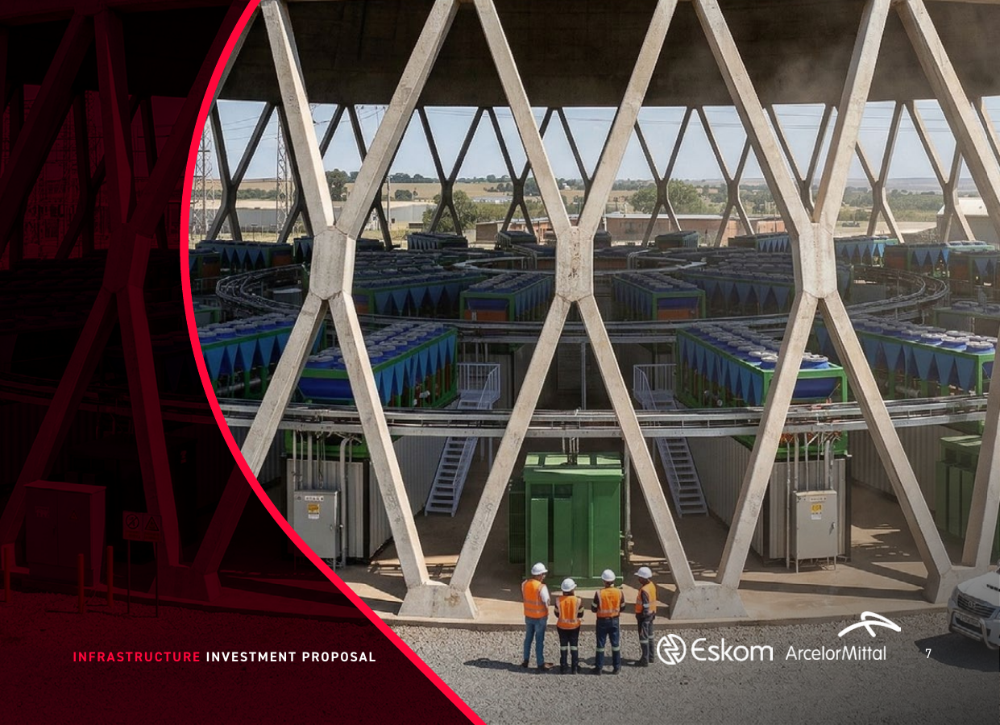

Base-case operating profile
Revenue begins at commissioning. In the current base case, capital deployment is front-loaded in Year 1, while operating performance improves materially as the fleet is fully installed and monetised.
BitMach is building a modular compute platform at industrial energy nodes, starting with a 20 MW Phase 1 deployment across Grootvlei and AMSA Vanderbijlpark. The current case is designed to prove execution quickly, generate revenue as soon as capacity is commissioned, and scale through a portfolio of named nodes rather than speculative greenfield development.
Growth is supported by contracted industrial-grade power access, brownfield electrical infrastructure and a deployment model that can move from capital commitment to commissioned capacity in approximately 12 weeks.

The simplified Phase 1 model is presented as the current underwriting case. Demand-response income and hyperscaler resale remain excluded from the base case and are treated as additional upside layers only after core operating performance is established.
Revenue begins at commissioning. In the current base case, capital deployment is front-loaded in Year 1, while operating performance improves materially as the fleet is fully installed and monetised.
| Metric | Year 1 | Year 2 | Year 3 |
|---|
BitMach's expansion curve is built around named nodes with predefined electrical capacity, existing substations and brownfield infrastructure reuse. Capacity therefore grows in step changes as each site is commissioned, rather than through abstract percentage-growth assumptions.
Proof of execution across Grootvlei and AMSA Vanderbijlpark, with immediate monetisation of commissioned power.
Expansion of proven sites, solar blending at AMSA, and broader tariff optimisation through flexible-demand positioning.
Replication across additional industrial and Eskom-linked nodes, with layered upside from broader compute and energy services.
The current investor pack is designed to keep the investment case high-level and decision-oriented, with supporting detail available in the downloadable materials.